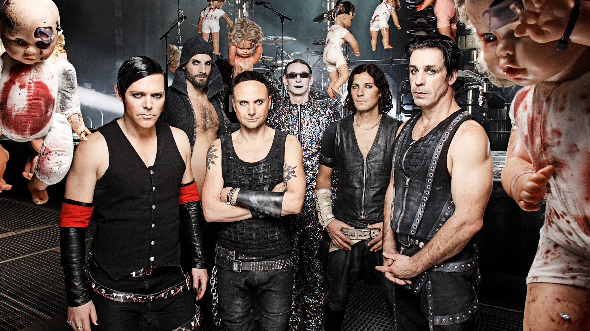
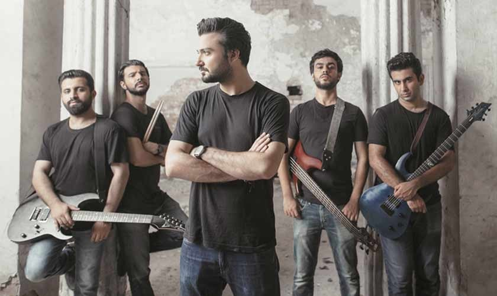

My favorite English singer is Ed Sheeran and The Weeknd
Rammstein in German (I mostly do listen to them but I also have others that I listen to.)
Arijit Singh all the way and one of my favorite bands of all-time, Pakistani band - Bayaan.
Jogging in rain and in cool weather is what pleases me a lot.